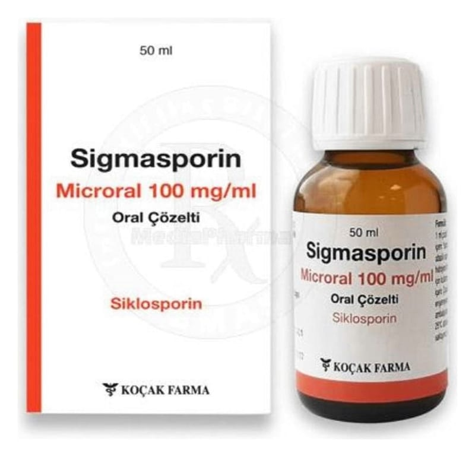

Sigmasporin Microral 100 mg/ml Oral Solüsyon

Ne için kullanılır
KT · Bölüm 1SİGMASPORİN MICRORAL sarı renkli saf likittir.
İlacınızın adı SİGMASPORİN M İCRORAL olup siklosporin adlı etkin maddeyi içerir. Bu madde, immünosupresif (bağış ıklık sistemini baskılayıcı) ajanlar olarak bilinen ilaç grubunun bir üyesidir. Bu ilaçlar vücudun immün (bağışıklık sistemi ile ilgili) reaksiyonlarını azaltmak üzere kullanılır. Her 1 mililitre oral çözelti 100 mg siklosporin içerir.
SİGMASPORİN MICRORAL, 50 ml’lik amber renkli cam şişelerde takdim edilmektedir ve doz ölçümü için 1 ml ve 4 ml şırınga ile birlikte verilmektedir.
Eğer size bir transplantasyon (organ nakli) uygulanmışsa, SİGMASPORİN MICRORAL’in fonksiyonu vücudunuzun bağışıklık (immün) sistemini kontrol etmektir. SİGMASPORİN MICRORAL, normal olarak nakledilmiş dokulara saldıracak olan özel hücrelerin gelişimini bloke ederek ( engelleyerek), nakledilen organın reddedilmesini önler.
Eğer kendi vücudunuzun immün (bağışıklık) yanıtını sağlayan sistemin vücudunuzdaki hücrelere saldırdığı bir hastalığınız (otoimmün hastalık) varsa, SİGMASPORİN MIC RORAL bu hastalıktaki bağışıklık sistemi tepkilerini (immünoreaksiyonları) bastırır. Bu tür otoimmün hastalıklar; görmeyi tehdit eden bir çeşit göz iltihabı olan göz hastalığı (orta veya ilerlemiş endojen üveit ya da Behçet üveiti), belirli deri hastalıklarının ağır vakaları (atopik dermatit / egzama ve sedef), şiddetli romatoid artrit (eklemlerde ağrı ve şekil bozukluğuna neden olan devamlı bir hastalık) ve nefrotik sendrom adı verilen bir böbrek hastalığı gibi hastalıklardır.